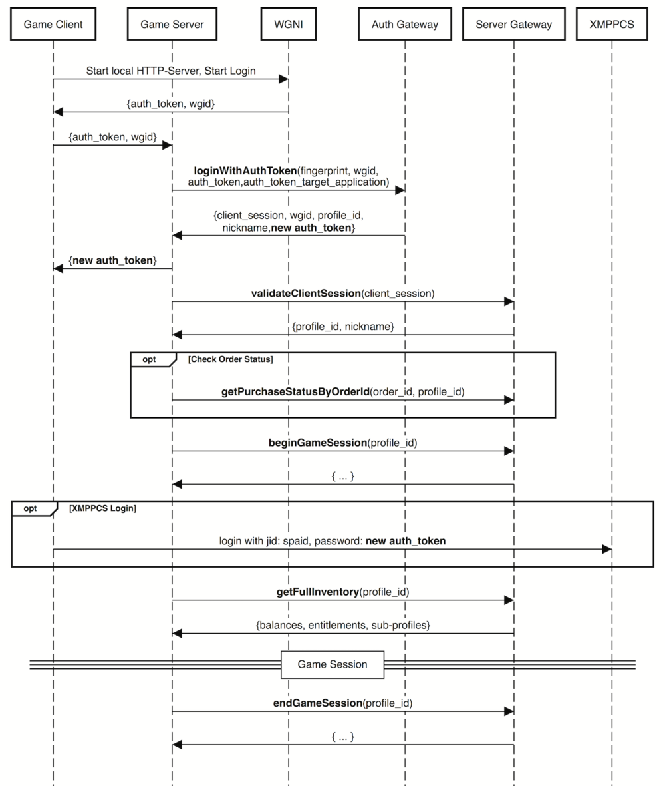
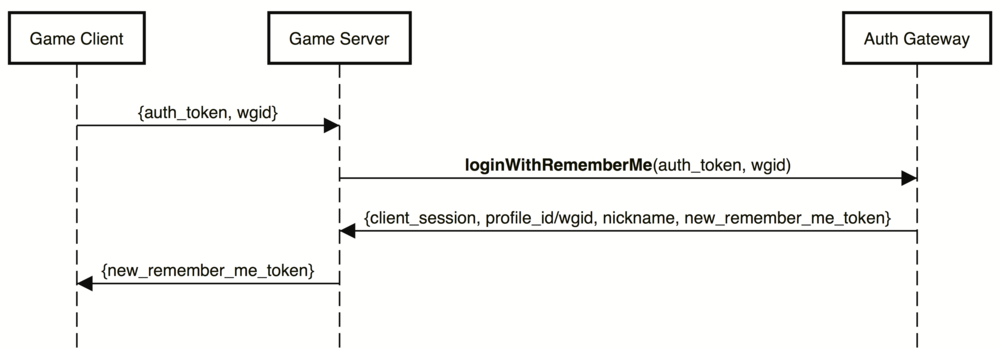

Implementing Authentication
Before a player can perform any actions they need to authenticate with the Platform. This document describes the login sequence to authenticate a player with the Platform, and contains a description of how to:
- Create an authenticated session.
- Validate this session.
- Get inventory data.
- Create Auth Token and Remember Me Token.
Any API request is signed with an API Key, which is provided during the title registration in the Game Management Tool. Contact the Platform Team to obtain the API Key.
WGNI & API Gateway Method
At this stage 3PP games use a hybrid authentication model via WGNI and API Gateway described below.
Assuming that the Partner Team has the API Key, the following sequence takes place:
- Login via WGNI and API Gateway using Auth Token for the first login.
- Login via API Gateway using Remember Me Token for all subsequent login instances.
Each title version has a specific API key to ensure version distinction.
Login via WGNI and API Gateway. Auth Token
The diagram below describes the initial login process:
- Get Auth Token via WGNI.
- Authenticate and validate session in the Platform.
- Get/sync account inventory data.
- (Optional) Get Remember Me Token.
- (Optional) Get additional Auth Token for XMPPCS.

Getting Auth Token via WGNI
Authentication via WGNI is a two-step procedure:
- Client starts a built-in HTTP-server and opens WGNI page in a system web-browser.
- Client receives a request to a built-in web-server from WGNI, which includes authentication credentials (
wgidandauth_token).
Note:
The attached Python file is a reference for WGNI implemention. Request the latest version of the file and valid WGNI_URL and SPA_URL from the Platform Team.
WGNI_URL — link to a web authentication page where a user logs in.
SPA_URL — S2S back-end API where server requests are sent to.
API Requests
The following requests are used to authenticate a player and synchronize the catalog.
| Method | Gateway | Description |
|---|---|---|
loginWithAuthToken |
Auth | Creates an authenticated session for the user from an Auth Token. |
validateClientSession |
Server | Returns the profile_id associated with the client_session token. |
getFullInventory |
Server | Gets profile's and its children's entitlements and virtual currency balances. |
getFullInventoryFromSession |
Server | Batch operation combining validateClientSession and getFullInventory. |
getPurchaseStatusByOrderId |
Server | Gets status of a purchase by Order Id. |
Login via API Gateway. Remember Me Token
The diagram below describes a login sequence with Remember Me Token from loginWithAuthToken.

API Requests
The following request is used to authenticate a player with a Remember Me Token.
| Method | Gateway | Description |
|---|---|---|
loginWithRememberMe |
Auth | Creates an authenticated session from a Remember Me Token. |